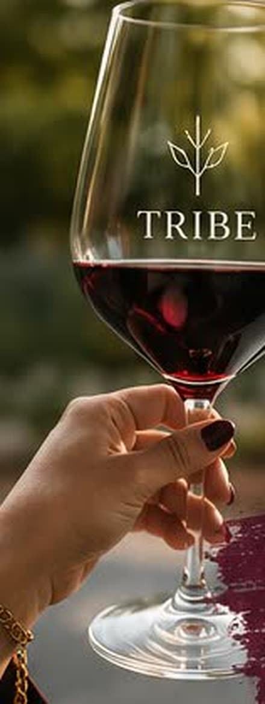

Gemeinsam laufen, genießen und den Abend in bester Gesellschaft ausklingen lassen. Gute Gespräche, neue Leute, ein Glas in der Hand und Bielefeld von seiner schönsten Seite.
Kein Programm, kein Druck — einfach loslaufen und schauen, wen du unterwegs kennenlernst.
Tribe. Together.

Bring your glass.
Die Route — du hast die Wahl
Vom Bürgerpark zum Obersee
… oder anders herum, je nach Vibe.
1
Direkter Weg
ca. 1:15 h
Für alle, die's entspannt mögen. Direkt vom Bürgerpark zum Obersee — der kurze, gemütliche Weg.
2
Scenic Route
ca. 2:00 h
Für alle, die mehr erleben wollen. Über die Fußgängerzone und am Lokschuppen vorbei — mehr Stadt, mehr Natur, mehr zu sehen. Die etwas längere, aber schönere Route.
Bürgerpark → OberseeStart & Ziel · oder anders herum
Was dich erwartet
Mehr als ein Spaziergang.
Ausgewählte Weine an kleinen StoppsUnterwegs halten wir an, stoßen an und genießen.
Zeit für gute Gespräche & neue LeuteBeim Laufen entstehen die besten Gespräche.
Bewegung, Natur & StadtflairPark, Fußgängerzone, Wasser — Bielefeld zu Fuß.
Gemeinsamer Ausklang am WasserSonnenuntergang am Obersee als großes Finale.
Bring your glass. Bring your tribe.
Dresscode
Wir tragen Wein
Komm in deinen Lieblingsfarben des Weins — für ein schönes Gesamtbild und gute Stimmung. Such dir deinen Ton aus ✿
Burgunder
Rosé
Goldweiß
Grün
Braun
Save the date.
Freitag oder Samstag im Sommer 2026 — den genauen Termin posten wir in der Gruppe. Sei dabei, wenn's losgeht.